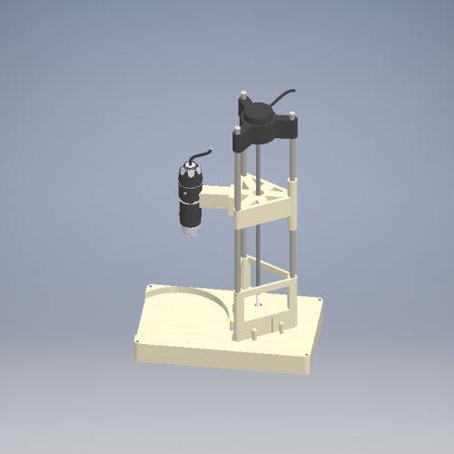
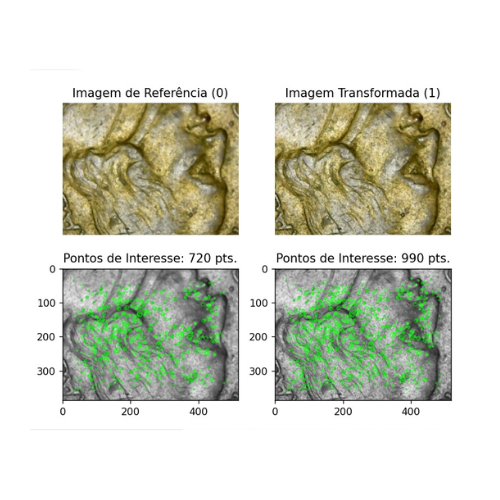

A morfometria de fósseis é uma das partes mais importantes para determinação de características das espécies dadas as grandes transformações físico-químicas pelas quais organismos passam no processo de fossilização.
Equipamentos desse tipo são muito custosos e muitas vezes não adaptados para as necessidades da paleontologia. Isso motivou esse projeto, em que uso de recursos simples de manufatura aditiva e programação de protótipos de microcontrolador podem ser combinados com técnicas avançadas de processamento de imagens para obtenção de modelos tridimensionais precisos.
A técnica proposta e usada aqui é de sucessivas fotos tiradas com um microscópio portátil com distâncias conhecidas através de uma combinação de modelo dinâmico do equipamento, um motor de passo e um encoder incremental. Essas sucessivas fotos são combinadas através de transformações lineares e avaliadas em seus pontos relevantes, que permitem a recuperação das escalas entre uma foto e outra.
A combinação de fotos sucessivas selecionando pixels com maior resolução entre uma foto e outra permite uma precisão de profundidade dos pixels mais fina do que os passos do motor de passo.

